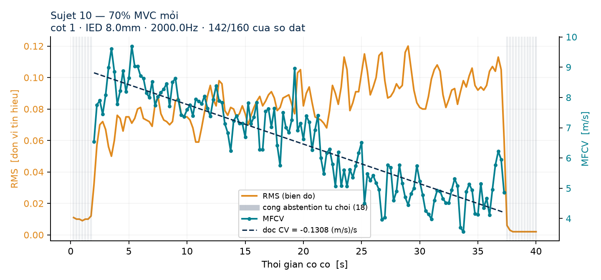

Kỹ thuật viên vật lý trị liệu gắn cảm biến sEMG 64 điện cực lên cơ đang tập (VD: cơ nhị đầu tay). Hệ thống theo dõi và phân loại Mỏi / Không mỏi theo thời gian thực trong suốt buổi tập.
Mỗi thuật ngữ dưới đây gắn với đúng con số / vùng bạn sẽ thấy khi buổi tập chạy — màu miền thời gian, miền tần số và tốc độ dẫn truyền khớp với 3 đường trong biểu đồ "Xu hướng RMS, MDF & MFCV" của demo.
Đường MFCV trong biểu đồ xu hướng không phải lúc nào cũng có giá trị — khi tín hiệu không đủ tin cậy để ước lượng tốc độ dẫn truyền, hệ thống để trống đoạn đó thay vì đoán một con số sai. Đó là hành vi có chủ đích, không phải lỗi hiển thị.

Mỗi cửa sổ 1 giây (2 000 mẫu) trên mỗi kênh tạo ra 14 đặc trưng. Các đặc trưng đó được đưa qua bộ phân loại KNN — mô hình dẫn đầu trong benchmark LOSO trên 10 đối tượng.